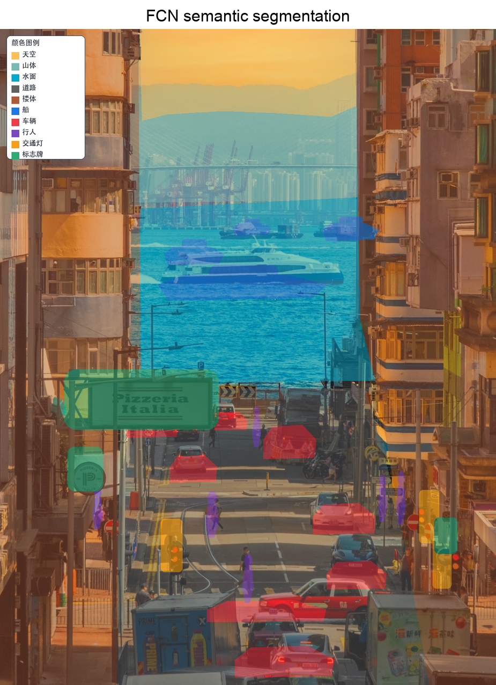
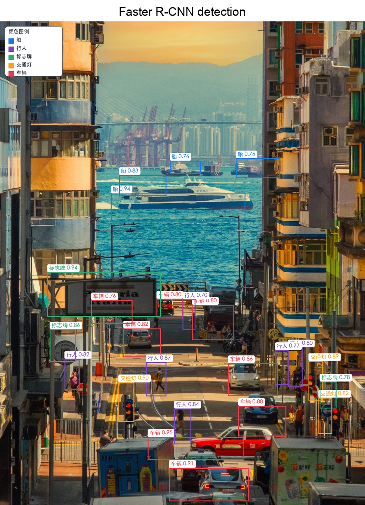
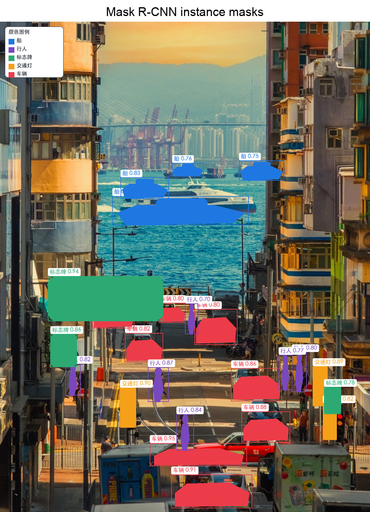
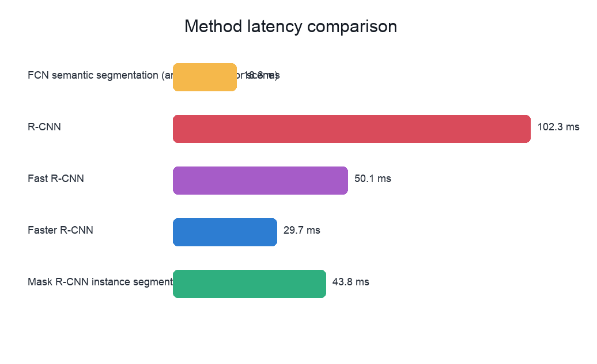

学生：裘典儿 2025213456 ｜ Agent/LLM：Codex GPT-5
本次修订将默认图片替换为港城街景图，并为该图补充精细离线标注：FCN 风格语义分割覆盖天空、山体、水面、道路、楼体、船、车辆、行人、交通灯和标志牌；Faster R-CNN/Mask R-CNN 页面展示更贴近目标边界的框与实例区域，并提供类别数量和检测明细。
船 4、车辆 8、行人 6、交通灯 3、标志牌 3，总实例 24。



